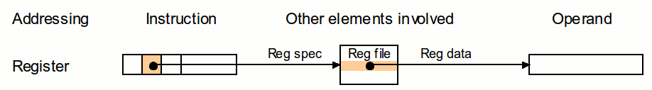
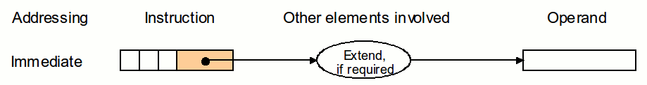

2.1 Organización del Procesador
La Unidad de Procesamiento (CPU) controla el funcionamiento del computador y lleva a cabo sus funciones de procesamien
to de datos. Frecuentemente se le llama procesador. Un procesador, incluye tanto registros visibles por el usuario com
o registros de control/estado.
El CPU está constituido por: Registros visibles para el usuario; Registros de control; La unidad de Control;
Unidad Aritmético-Lógica.

2.2 Estructura de Registros
Un registro es una memoria que está ubicada en el procesador y se encuentra en el nivel más alto en la jerarquía de memoria, por lo tanto, tiene una alta velocidad pero con poca capacidad para almacenar datos que va desde los 4 bits hasta los 64 bits dependiendo del procesador que se utilice. Los datos que almacena son los que se usan frecuentemente.

2.2.1 Registros Visibles para el Usuario
Un registro visible al usuario es aquel que puede ser referenciado por medio del lenguaje máquina que ejecuta la CPU.
Permiten al programador de lenguaje máquina o de ensamblador minimizar las referencias a memoria principal por medio
de la optimización del uso de registros.
Su clasificación es: Uso general; Datos; Direcciones; Códigos de Condición; Índice; Segmento; Apuntadores;
Banderas; Instrucción; Control de Estado.
2.2.2 Registros de Control y de Estados
Son utilizados por la unidad de control para controlar el funcionamiento del procesador y por programas privilegiados del sistema operativo para controlar la ejecución de programas. Hay diversos registros del procesador que se emplean para controlar su funcionamiento.

2.2.3 Ejemplo de Registros de CPU Reales

2.3 El Ciclo de Instrucción
Es también llamado ciclo de fetch-and-execute o ciclo de fetchdecode-execute) es el período que tarda la unidad central
de proceso (CPU) en ejecutar una instrucción de lenguaje máquina.
Cada instrucción del juego de instrucciones de una CPU puede requerir diferente número de ciclos de instrucción para su
ejecución. Un ciclo de instrucción está formado por uno o más ciclos máquina.
2.3.1 Ciclo Fetch - Decode - Execute
1. Buscar la instrucción en la memoria principal
El valor del MDR es colocado en el Registro de Instrucción Actual (CIR), un circuito que guarda la instrucción tempora lmente de manera que pueda ser decodificada y ejecutada.
2. Decodificar la Instrucción
El decodificador de instrucción interpreta e implementa la instrucción. El registro de instrucción (IR) mantiene la instrucción en curso mientras el contador de programa (PC, program counter) guarda la dirección de memoria de la siguiente instrucción a ser ejecutada. Se lee la dirección efectiva de la memoria principal si la instrucción tiene una dirección indirecta.
3. Ejcecutar la Instrucción
A partir del registro de instrucción, los datos que forman la instrucción son decodificados por la unidad de control. Ésta interpreta la información como una secuencia de señales de control que son enviadas a las unidades funcionales relevantes de la CPU para realizar la operación requerida por la instrucción.
4. Almacenar o Guardar Resultados
El resultado generado por la operación es almacenado en la memoria principal o enviado a un dispositivo de salida depen diendo de la instrucción. Basándose en los resultados de la operación, el contador de programa se incrementa para apuntar a la siguiente instruc ción o se actualiza con una dirección diferente.
2.3.2 Segmentación de Instrucciones
Es una técnica que permite implementar el paralelismo a nivel de instrucción en un único procesador. La segmentación intenta tener ocupadas con instrucciones todas las partes del procesador, dividiendo las instrucciones en una serie de pasos secuenciales que efectuarán distintas unidades de la CPU, tratando en paralelo diferentes partes de las instrucciones. Permite una mayor tasa de transferencia efectiva por parte de la CPU.

2.3.3 Conjunto de Instrucciones
Una máquina puede llegar a funcionar con un juego de instrucciones muy limitado), esto simplificaría mucho los circuitos
de la máquina. Sin embargo, un conjunto de instrucciones demasiado simplificado origina, como consecuencia, unos program
as demasiado complejos e ineficientes.
Es necesario encontrar un compromiso entre la simplicidad del hardware y del software. Un mínimo para llegar a ese compro
miso se consigue con los tipos de instrucciones siguientes: Instrucciones de transferencia de datos. Instrucciones aritm
éticas. Instrucciones lógicas. Instrucciones de control del flujo del programa (bifurcaciones, bucles, procedimientos, etc.) Instrucciones de entrada y salida.
2.3.4 Modos de Direccionamiento
1. Direccionamiento por registro
Donde los operandos son registros. Los datos a operar están contenidos en 2 registros de 32 bits y el resultado será colocado en otro registro, del mismo tamaño.
2. Direccionamiento base o desplazamiento
Donde uno de los operandos está en una localidad de memoria cuya dirección es la suma de un registro y una constante que forma parte de la misma instrucción.

3. Direccionamiento Inmediato
Donde uno de los operandos es una constante que está en la misma instrucción.
4. Direccionamiento relativo al PC
Donde se forma una dirección sumando una constante, que está en la instrucción, con el registro PC (Program Counter). El resultado de la suma corresponde a la dirección destino si un brinco condicional se va a realizar.
5. Direccionamiento pseudo directo
donde la dirección destino de un salto corresponde a la concatenación de 26 bits que están en la misma instrucción con los bits mas significativos del PC.
2.4 Casos de Estudio de CPU Reales
Procesador Intel Core i9 - 14900K
Tarjeta Gráfica:
Intel UHD Graphics 770.
Velocidad:
3.20 GHz
Núcleos:
24
Hilos:
32
Caché:
26 MB
Compatibilidad:
Es compatible con una amplia gama de tipos de memoria, incluyendo DDR4-SDRAM y DDR5-SDRAM.
Arquitectura:
Usan una arquitectura híbrida de desempeño que combina dos microarquitecturas de núcleos en un solo chip.